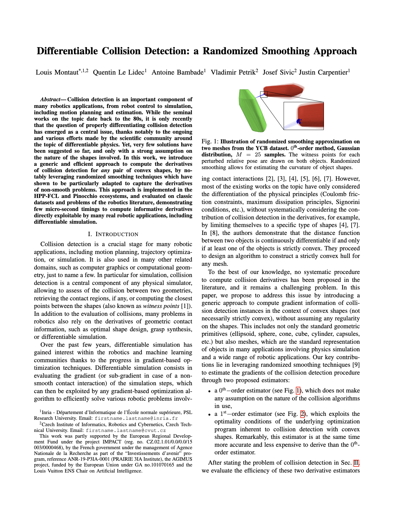

Collision detection is an important component of many robotics applications, from robot control to simulation, including motion planning and estimation. While the seminal works on the topic date back to the 80s, it is only recently that the question of properly differentiating collision detection has emerged as a central issue, thanks notably to the ongoing and various efforts made by the scientific community around the topic of differentiable physics. Yet, very few solutions have been suggested so far, and only with a strong assumption on the nature of the shapes involved. In this work, we introduce a generic and efficient approach to compute the derivatives of collision detection for any pair of convex shapes, by notably leveraging randomized smoothing techniques which have shown to be particularly adapted to capture the derivatives of non-smooth problems. This approach is implemented in the HPP-FCL and Pinocchio ecosystems, and evaluated on classic datasets and problems of the robotics literature, demonstrating few micro-second timings to compute informative derivatives directly exploitable by many real robotic applications, including differentiable simulation.
|  |
L. Montaut, Q. Le Lidec, A. Bambade, V. Petrik, J. Sivic and J. Carpentier Differentiable Collision Detection: a Randomized Smoothing Approach International Conference on Robotics and Automation, 2023 [Paper on IEEEXplore (also available on arXiv)] BibTeX
@inproceedings{montaut2023DiffcolRS,
title = {Differentiable Collision Detection: a Randomized Smoothing Approach},
author = {Montaut, Louis and Le Lidec, Quentin and Bambade, Antoine and Petrik, Vladimir and Sivic, Josef and Carpentier, Justin},
booktitle = {International Conference on Robotics and Automation},
year = {2023}
}
|
This work was partly supported by the European Regional Development Fund under the project IMPACT (reg. no. CZ.02.1.01/0.0/0.0/15 003/0000468), by the French government under the management of Agence Nationale de la Recherche as part of the “Investissements d’avenir” program, reference ANR-19-P3IA-0001 (PRAIRIE 3IA Institute), the AGIMUS project, funded by the European Union under GA no.101070165 and the Louis Vuitton ENS Chair on Artificial Intelligence.
The documents contained in these directories are included by the contributing authors as a means to ensure timely dissemination of scholarly and technical work on a non-commercial basis. Copyright and all rights therein are maintained by the authors or by other copyright holders, notwithstanding that they have offered their works here electronically. It is understood that all persons copying this information will adhere to the terms and constraints invoked by each author's copyright. .